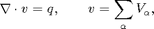

Contents
- Vertical average formulations
- Define rock and grid
- Define well and boundary for the test case
- make well from deck which have to be one cell layers
- no sorce in this example
- Define solvers to solve the system with
- initialize all problems with init solution
- Run transport-simulation:
- pressure solve
- transport solve
- print out calculation time
%%%%%%%%%%%%%%%%%%%%%%%%%%%%%%%%%%%%%%%%%%%%%%%%%%%%%%%%%%%%%%%%%%%%%%%%%%%
Vertical average formulations
Here, we we study the use of different formultions for the vertical equlibrium approximations to the twophase flow in reservoirs.
We start with the darcy laws verions of the darcy laws
The upscaled version of this using the assumption of vertical equlibrium sharp interface, constant permeability and porosity

Here each pressure and correspond to a referenace z value at the same point for example the top and bottom corresponding to CO_2 and water
It is convenient to use use  $ and $ witch correspoind to assosiating the top pressure with CO2 and setting a water pressure at the top to be the hydrostatic extrapolation of the bottom pressure. The equations then becomes
$ and $ witch correspoind to assosiating the top pressure with CO2 and setting a water pressure at the top to be the hydrostatic extrapolation of the bottom pressure. The equations then becomes
We notize no that the the gravity term now is equal in the two equations like in traditional twophase simulations and that transpormation depend on keeping water incompressible. If the top and bottom surfaces where parallel(which will be the case in this example) in which case also the first formulation would have the same gravity term. The change in definiion of pressures correspond to change the capillary pressure term from
to
A third useful formulation to introduce the pressure at the interface as a variable. That is

the Darcy's laws then becomes
In this formulation it is evident that we flat fluid surfaces $ (z_{top}-h))=C$ do not contribute to total flow. It is alow covenient when formulating total flow since
Reformulated to using s as variable we can write
Ass usual the pressure equation fro incompressible flow is obtaind by $
where v is the Darcy velocity (total velocity) and lambda_t is the total mobility, which depends on the water saturation S.
The transport equation (conservation of the CO2 phase) in its simplest form:
This is eqivalent with a capillary pressure term with
$$ p_c = (\rho_{CO2_2}-\rho_{water}) h$$and
$$ p_c = H (\rho_{water}-\rho_{CO2}) s$$This correspond to define bouth pressures $P_{\alpha}$ at the top
surface and alwas interpret the water pressure as the hydrostatic
extrapolation of the pressure at the bottom.The test case uses two wells and we will use two different methods
1) formulation using h as variable and mimetic for pressure and
explicit time stepping. This was the original formulation in the
vertical average module. 2) Using s as variable and using tpfa an implicit transport from the
mrst core.The example also set up a compate deck file which can be written and may be used for simulation by tradition solvers
%%%%%%%%%%%%%%%%%%%%%%%%%%%%%%%%%%%%%%%%%%%%%%%%%%%%%%%%%%%%%%%%%%%%%%%%%%% gravity on % ensure that gravity i on require gridtools deckformat %%%%%%%%%%%%%%%%%%%%%%%%%%%%%%%%%%%%%%%%%%%%%%%%%%%%%%%%%%%%%%%%%%%%%%%%%%% % Quantities to vary: %% %%%%%%%%%%%%%%%%%%%%%%%%%%%%%%%%%%%%%%%%%%%%%%%%%%%%%%%%%%%%%%%%%%%%%%%%%%% n = 50; % number grid cells in the slop direction L = 2000; %5000; dim3 = 1; % cells in the vertical direction H = 15; % height of resevoir dy = 1000; % with of slize total_time=200*year; %500*year; nsteps=20; % number of steps %dt = total_time/nsteps; % total_time/1000; dt =2*year; injection_time=total_time/10; % injection time perm = 100; % permeability K=perm*milli*darcy(); phi= 0.1; % initial related quantities depth=1000; % depth of reservoir p_press=200; % initial pressure rate=(H*phi*L*dy)*0.2*day/injection_time; % define tilt angle theta = -1*pi/180; %%%%%%%%%%%%%%%%%%%%%%%%%%%%%%%%%%%%%%%%%%%%%%%%%%%%%%%%%%%%%%%%%%%%%%%%%%% % Make a deck struct %%%%%%%%%%%%%%%%%%%%%%%%%%%%%%%%%%%%%%%%%%%%%%%%%%%%%%%%%%%%%%%%%%%%%%%%%%% cartdims = [n 1 dim3]; nc=prod(cartdims); % define runspec deck.RUNSPEC.cartDims=cartdims; deck.RUNSPEC.DIMENS=cartdims; deck.RUNSPEC.OIL=1; % varables only to complete the grid format deck.RUNSPEC.WATER=1; deck.RUNSPEC.METRIC=1; deck.RUNSPEC.TABDIMS=[1 1 20 50 20 50 1 20 20 1 10 1 -1 0 1]; deck.RUNSPEC.WELLDIMS=[5 10 2 1 5 10 5 4 3 0 1 1]; deck.RUNSPEC.AQUDIMS=[0 0 0 0 10 10 0 0]; deck.RUNSPEC.START=734139; deck.REGIONS.SATNUM=ones(nc,1); % set up fluid but is not used in a vertical equilibrium calculation chop = @(x) min(max(0,x),1); s_wc = 0.0; %0.2; s_or = 0.0; %0.2; s = linspace(s_wc, 1 - s_or, 2)'; alpha = 2; s_star = (s - s_wc)/(1 - s_wc - s_or); swof = [s, chop(s_star.^alpha), chop((1-s_star).^alpha), s*0.0]; %swof = [s, chop(s_star.^alpha), chop((1-s_star).^alpha), (1-s)*drho*norm(g)*0.0]; %swof = [swof; [1.0 1.0 0.0 0.0]]; deck.PROPS.SWOF{1} = swof; pres = convertTo(convertFrom(6000, psia), barsa); deck.SOLUTION.PRESSURE=ones(nc,1)*pres; % define density deck.PROPS.DENSITY = [600 1000 1]; deck.PROPS.ROCK=[100 1.0e-6 NaN NaN NaN NaN]; deck.PROPS.PVTW=[100 1.0 0.0 0.40 0]; deck.PROPS.PVDO{1}=[100 1 0.1;1000 1 0.1]; % define summary deck.SUMMARY=[]; % define grid deck.SCHEDULE.step.val=ones(nsteps,1)*dt/day; %deck.SCHEDULE.step.control=ones(nsteps,1); deck.GRID=grdeclSloping([n, 1, dim3],[L dy H],'theta',theta,'amp',H/5,'lambda',L/4); deck.GRID.ZCORN=deck.GRID.ZCORN+depth; deck.GRID.ACTNUM=int32(ones(nc,1)); deck.GRID.PORO=ones(nc,1)*phi; deck.GRID.PERMX=ones(nc,1)*perm; deck.GRID.PERMY=ones(nc,1)*perm; deck.GRID.PERMZ=ones(nc,1)*perm; % make cornerpoint grid for the sloping case grdecl = grdeclSloping([n, 1, dim3],[L dy H],'theta',theta,'amp',H/5,'lambda',L/4); % deck.SOLUTION.SWAT=ones(nc,1); deck.SOLUTION.SOIL=ones(nc,1).*0.0; % define needed quantitites for simulation mu=[deck.PROPS.PVDO{1}(1,3),deck.PROPS.PVTW(1,4)]*centi*poise(); rho=deck.PROPS.DENSITY(1:2); deck.SCHEDULE.control.WELSPECS=... {... 'I01' 'W' [ ceil(cartdims(1)/2)] [ ceil(cartdims(2)/2) ] [1000] 'OIL' [0] 'STD' 'SHUT' 'NO' [0] 'SEG' [0];... 'P01' 'W' [ cartdims(1)] [cartdims(2)] [1004.03647] 'OIL' [0] 'STD' 'SHUT' 'NO' [0] 'SEG' [0];... };%#ok radius=0.01; deck.SCHEDULE.control.COMPDAT=... {... 'I01' [ ceil(cartdims(1)/4)] [ ceil(cartdims(2)/2) ] [1] [cartdims(3)] 'OPEN' [0] [0] [radius] [-1] [0] 'Default' 'Z' [-1];... 'P01' [ cartdims(1)] [cartdims(2)] [1] [cartdims(3)] 'OPEN' [0] [0] [radius] [-1] [0] 'Default' 'Z' [-1];... };%#ok % use scaled spe10 rates deck.SCHEDULE.control.WCONINJE=... {... 'I01' 'OIL' 'OPEN' 'BHP' [rate] [rate] [500-89.4018] [Inf] [0] [0]... };%#ok deck.SCHEDULE.control.WCONPROD=... {... 'P01' 'OPEN' 'RESV' [Inf] [Inf] [Inf] [Inf] [rate] [p_press-89.4018] [0] [0] [0];... };%#ok % define injection control deck.SCHEDULE.control=[deck.SCHEDULE.control;deck.SCHEDULE.control]; % define shut well for the last simulation deck.SCHEDULE.control(2).WCONINJE{3}='SHUT'; % define grid deck.SCHEDULE.step.val=ones(nsteps,1)*dt/day; deck.SCHEDULE.step.val=[deck.SCHEDULE.step.val,deck.SCHEDULE.step.val*40]; % deck is finnished % writeDeck('test_slope',deck); % convert units deck_converted=convertDeckUnits(deck); %%%%%%%%%%%%%%%%%%%%%%%%%%%%%%%%%%%%%%%%%%%%%%%%%%%%%%%%%%%%%%%%%%%%%%%%%%%
Define rock and grid
%%%%%%%%%%%%%%%%%%%%%%%%%%%%%%%%%%%%%%%%%%%%%%%%%%%%%%%%%%%%%%%%%%%%%%%%%%% % make grid g = processGRDECL(deck_converted.GRID);% process grid % and alternative would be g = initEclipseGrid(deck_conveted); g = computeGeometry(g);% calculate geometry % make top surface grid g_top = topSurfaceGrid(g); g_top.cells.H=H*ones(g_top.cells.num,1); g_top.columns.dz=ones(numel(g_top.columns.cells),1)*H/dim3; g_top.columns.z = cumulativeHeight(g_top); % get permeability rock.perm = deck_converted.GRID.PERMX; rock.poro = deck_converted.GRID.PORO; % make average permeability used in VE formulation rock2d = averageRock(rock, g_top); %%%%%%%%%%%%%%%%%%%%%%%%%%%%%%%%%%%%%%%%%%%%%%%%%%%%%%%%%%%%%%%%%%%%%%%%%%%
Define well and boundary for the test case
%%%%%%%%%%%%%%%%%%%%%%%%%%%%%%%%%%%%%%%%%%%%%%%%%%%%%%%%%%%%%%%%%%%%%%%%%%% % bondary bc_s=[]; bc_h = bc_s;
make well from deck which have to be one cell layers
process the well information we only use control(1)
W_3D = processWells(g,rock,deck_converted.SCHEDULE.control(1)); W_3D_2ph=W_3D; % change resv to rate which is used in the 2ph simulations for i=1:numel(W_3D) if(strcmp(W_3D(i).type,'resv')) W_3D_2ph(i).type='rate'; end % well indices is correct since they are calculated in 3D which % include the hight in the WI end % make VE wells for s and h formulation % we will use mimetic for the h formulation with ip_simple innerproduct W_h = convertwellsVE(W_3D_2ph, g, g_top, rock2d,'ip_simple'); % we will use tpfa method for the s formulation W_s = convertwellsVE(W_3D_2ph, g, g_top, rock2d,'ip_tpf'); % correct the definition of input value according to solver for i=1:numel(W_h) % s solver use composition W_s(i).compi=[1 0]; % h solver use h in well W_h(i).compi=nan; W_h(i).h = g_top.cells.H(W_h(i).cells); end
no sorce in this example
src_s = []; %addSource([], ind_well, rate,'sat',[1 0]); src_h = src_s; for i=1:numel(src_h) src_h.sat = nan; src_h.h = g_top.cells.H(src_s.cell); end %%%%%%%%%%%%%%%%%%%%%%%%%%%%%%%%%%%%%%%%%%%%%%%%%%%%%%%%%%%%%%%%%%%%%%%%%%%
Define solvers to solve the system with
%%%%%%%%%%%%%%%%%%%%%%%%%%%%%%%%%%%%%%%%%%%%%%%%%%%%%%%%%%%%%%%%%%%%%%%%%%% % define residual CO2 saturation sr=0.0; % define residual water saturation sw=0.0; n=1; %%%%%%%%%%%%%%%%%%%%%%%%%%%%%%%%%%%%%%%%%%%%%%%%%%%%%%%%%%%%%%%%%%%%%%%%%%% % H based solver setup %%%%%%%%%%%%%%%%%%%%%%%%%%%%%%%%%%%%%%%%%%%%%%%%%%%%%%%%%%%%%%%%%%%%%%%%%%% % Define H based fluid problem{n}.name = 'H formulation, mimetic, explicit' problem{n}.fluid = initVEFluidHForm(g_top, 'mu', mu, 'rho', rho,'sr',sr,'sw',sw); %fluid % Define initial sol structure for h formulation problem{n}.sol = initResSol(g_top, 0);% initial state % Calculate the inner product on the surface S=computeMimeticIPVE(g_top,rock2d,'Innerproduct','ip_simple'); % inner product % Define wells and boundary conditions problem{n}.W=W_h;% well problem{n}.bc=bc_h; % boundary condition problem{n}.src=src_h; % sources % Define mimetic pressure solver using h based formulation problem{n}.psolver =@(sol,fluid,W,bc, src)... solveIncompFlowVE(sol,g_top,S,rock2d,fluid,'wells',W,'bc',bc, 'src', src ); % Define explicit transport using h based formulation problem{n}.tsolver =@(sol,fluid,dt,W,bc, src)... explicitTransportVE(sol, g_top, dt, rock, fluid, ... 'computeDt', true, 'intVert_poro', false,'intVert',false,'wells',W,'bc',bc, 'src', src); % Add variables which is used to compare result % This solver compute h problem{n}.compute_h=false; % this solver do not compute saturation so we have to do that separately to compeare problem{n}.compute_sat=true; % color for the plotting problem{n}.col='r'; n=2; %%%%%%%%%%%%%%%%%%%%%%%%%%%%%%%%%%%%%%%%%%%%%%%%%%%%%%%%%%%%%%%%%%%%%%%%%%% % H based solver setup %%%%%%%%%%%%%%%%%%%%%%%%%%%%%%%%%%%%%%%%%%%%%%%%%%%%%%%%%%%%%%%%%%%%%%%%%%% % Define fluid for s based formulation problem{n}.name = 'S formulation, tpfa, implicit' problem{n}.fluid = initSimpleVEFluid_s('mu' , mu , 'rho', rho, ... 'height' , g_top.cells.H,... 'sr', [sr, sw]); % Define fluid structure problem{n}.sol = initResSolVE_s(g_top, 0, 0); % Notice the function handle problem{n}.sol.twophaseJacobian % Which points to the Jacobian System defining the VE formulation which i a % slight extention of the origian Jacobian system twophaseJacobian used in % MRST. % Calculate Transmissibility for the 2D top surface grid. % Depending on the definition of area an length in the topsurface grid this % will have or not treath length along the surface. T=computeTrans(g_top,rock2d); % Multiply the transmissibilities with hight of grid to be able to use % normalized fluids. cellno = gridCellNo(g_top); T=T.*g_top.cells.H(cellno); % Define wells and boundary conditions problem{n}.W=W_s; problem{n}.bc=bc_s; problem{n}.src=src_s; % Define twopoint flux approximation as the pressure solver. problem{n}.psolver =@(sol,fluid, W, bc, src)... incompTPFA(sol,g_top,T,fluid,'wells',W,'bc',bc,'src',src); % Notice g_top.grav_pressure % which define a function handle to how to calculate the gravity % contribution. This is the part which is VE spesific. % Define implicit transport as the transport method problem{n}.tsolver =@(sol,fluid,dt,W,bc, src)... implicitTransport(sol, g_top, dt,rock2d, fluid,'wells',W,'bc',bc,'src',src); % remember that the system is defined in problem{n}.sol.twophaseJacobian % Set up variables used for comparing the solutions % One need to calculate h separatly since the solver do not problem{n}.compute_h=true; % Saturation is calculated by the solver problem{n}.compute_sat=false; % Ticks and colors for plotting problem{n}.col='gs'; %%%%%%%%%%%%%%%%%%%%%%%%%%%%%%%%%%%%%%%%%%%%%%%%%%%%%%%%%%%%%%%%%%%%%%%%%
problem =
[1x1 struct]
problem =
[1x1 struct] [1x1 struct]
ans =
@twophaseJacobianWithVE_s
ans =
@(g,omega)gravPressureVE_s(g,omega)
ans =
@twophaseJacobianWithVE_s
initialize all problems with init solution
%%%%%%%%%%%%%%%%%%%%%%%%%%%%%%%%%%%%%%%%%%%%%%%%%%%%%%%%%%%%%%%%%%%%%%%%% for kk=1:numel(problem) s_init=deck.SOLUTION.SOIL; h_init=deck.SOLUTION.SOIL.*g_top.cells.H; problem{kk}.sol.s=s_init; problem{kk}.sol.h=h_init; problem{kk}.sol.extSat=[s_init,s_init]; problem{kk}.sol.h_max=h_init; problem{kk}.p_time=0; problem{kk}.t_time=0; end %%%%%%%%%%%%%%%%%%%%%%%%%%%%%%%%%%%%%%%%%%%%%%%%%%%%%%%%%%%%%%%%%%%%%%%%%
Run transport-simulation:
%%%%%%%%%%%%%%%%%%%%%%%%%%%%%%%%%%%%%%%%%%%%%%%%%%%%%%%%%%%%%%%%%%%%%%%%% fig1=figure(1); fig2=figure(2); fig3=figure(3); t = 0; while t < total_time if( mod(floor(t/dt),5)==0 || (t==total_time-dt)) set(0, 'CurrentFigure', fig1);clf set(0, 'CurrentFigure', fig2);clf set(0, 'CurrentFigure', fig3);clf set(gca,'YDir','reverse') end disp(['Time step is ',num2str(t/year)]) for kk=1:numel(problem)
free_volume= sum(problem{kk}.sol.s.*rock2d.poro.*g_top.cells.volumes.*g_top.cells.H);
disp(['Total volume free ',num2str(kk),' ', num2str(free_volume/1e6)]);
if(t<injection_time)
W=problem{kk}.W;
bc=problem{kk}.bc;
src = problem{kk}.src;
else
if(numel(W)>1)
% increase timestep for post injection
dt=10*dt;
end
W=problem{kk}.W(1);
if(numel(problem{kk}.sol.wellSol)>1)
problem{kk}.sol.wellSol=problem{kk}.sol.wellSol(2);
end
bc=[];
src = [];
end
Total volume free 1 0
Total volume free 2 0
Total volume free 1 0.06
Total volume free 2 0.059978
Total volume free 1 0.12
Total volume free 2 0.11982
Total volume free 1 0.18
Total volume free 2 0.17924
Total volume free 1 0.24
Total volume free 2 0.23777
Total volume free 1 0.3
Total volume free 2 0.29482
Total volume free 1 0.35995
Total volume free 2 0.34989
Total volume free 1 0.41893
Total volume free 2 0.40328
Total volume free 1 0.47471
Total volume free 2 0.45418
Total volume free 1 0.52632
Total volume free 2 0.50176
Total volume free 1 0.57397
Total volume free 2 0.54672
Total volume free 1 0.57397
Total volume free 2 0.54672
Total volume free 1 0.57397
Total volume free 2 0.54672
Total volume free 1 0.57397
Total volume free 2 0.54672
Total volume free 1 0.57397
Total volume free 2 0.54672
Total volume free 1 0.57397
Total volume free 2 0.54672
Total volume free 1 0.57397
Total volume free 2 0.54672
Total volume free 1 0.57397
Total volume free 2 0.54672
Total volume free 1 0.57397
Total volume free 2 0.54672
pressure solve
tmp=tic;
problem{kk}.sol = problem{kk}.psolver(problem{kk}.sol, problem{kk}.fluid, W, bc, src);
tmp=toc(tmp);
problem{kk}.p_time=problem{kk}.p_time+tmp;
transport solve
tmp=tic;
nn=1;
for ii=1:nn
if(t>injection_time)
%problem{kk}.sol.flux(:) = 0;% uncomment if forsing zero total
%flow
end
problem{kk}.sol = problem{kk}.tsolver(problem{kk}.sol,problem{kk}.fluid,dt/nn,W,bc, src);
end
tmp=toc(tmp);
problem{kk}.t_time=problem{kk}.t_time+tmp;
if(problem{kk}.compute_h)
% if the solver do not compute h, h_max calculate it
[h,h_max]=problem{kk}.fluid.sat2height(problem{kk}.sol);
problem{kk}.sol.h = h;
problem{kk}.sol.h_max = h_max;
% set the value s_max for convenience
problem{kk}.sol.s_max = problem{kk}.sol.extSat(:,2);
end
if(problem{kk}.compute_sat)
% if the solver do not compute s, s_max calculate it
problem{kk}.sol.s = (problem{kk}.sol.h*(1-sw)+(problem{kk}.sol.h_max-problem{kk}.sol.h)*sr)./g_top.cells.H;
problem{kk}.sol.s_max = problem{kk}.sol.h_max*(1-sw)./g_top.cells.H;
end
if( mod(floor(t/dt),10)==0 || (t==total_time-dt))
if(g_top.cartDims(2)==1)
% plot saturation and max_h
set(0, 'CurrentFigure', fig1);
% plot h
subplot(2, 2, 1)
hold on
plot(g_top.cells.centroids(:,1), problem{kk}.sol.h,problem{kk}.col)
if(kk==1);axh=axis();else axis(axh);end
ylim([0 H])
title('Height');xlabel('x'); ylabel('h');
% plot h_max
subplot(2, 2, 2)
hold on
plot(g_top.cells.centroids(:,1), problem{kk}.sol.h_max,problem{kk}.col)
if(kk==1);axh_max=axis();else axis(axh_max);end
ylim([0 H])
title('Max Height');xlabel('x'); ylabel('h_max') ;
% plot saturation
subplot(2, 2, 3)
hold on
plot(g_top.cells.centroids(:,1), problem{kk}.sol.s(:,1),problem{kk}.col)
if(kk==1);axs=axis();else axis(axs);end
ylim([0 1])
title('Saturation');xlabel('x'); ylabel('s')
% plot maximum saturation
subplot(2, 2, 4)
hold on
plot(g_top.cells.centroids(:,1), problem{kk}.sol.s_max(:,1),problem{kk}.col)
if(kk==1);axs_max=axis();else axis(axs_max);end
ylim([0 1])
title('Max Saturation');xlabel('x'); ylabel('s_max')
% plot pressure
set(0, 'CurrentFigure', fig2);
hold on
plot(g_top.cells.centroids(:,1),problem{kk}.sol.pressure/barsa,problem{kk}.col)
if(~problem{kk}.compute_sat)
% also plot co2 pressure the default is to use the persure of
% the second phase pressure for the incompressible solvers
plot(g_top.cells.centroids(:,1),(problem{kk}.sol.pressure-problem{kk}.fluid.pc(problem{kk}.sol))/barsa,['-',problem{kk}.col])
else
plot(g_top.cells.centroids(:,1),(problem{kk}.sol.pressure-norm(gravity)*deck.PROPS.DENSITY(1)*problem{kk}.sol.h)/barsa,['s',problem{kk}.col])
end
xlabel('x')
ylabel('pressure')
title(['Comparing pressure for the different solvers time = ', num2str((t+dt)/year) ,' years'])
% 1) for the injection period the well indexs which is not exact
% for a 1D calculation effect the result.
set(0, 'CurrentFigure', fig3);
hold on
if(kk==1)
plot(g_top.cells.centroids(:,1),g_top.cells.z,'k','LineWidth',2)
plot(g_top.cells.centroids(:,1),g_top.cells.z+g_top.cells.H,'k','LineWidth',2)
mind=floor(g_top.cells.num/2);
text(g_top.cells.centroids(mind,1),g_top.cells.z(mind)-5,'Top surface')
text(g_top.cells.centroids(mind,1),g_top.cells.z(mind)+g_top.cells.H(mind)+5,'Bottom surface')
mind=floor(g_top.cells.num/4);
text(g_top.cells.centroids(mind,1)-50,g_top.cells.z(mind)+problem{kk}.sol.h(mind)-2,'Free CO2','Color','b')
text(g_top.cells.centroids(mind,1),g_top.cells.z(mind)+problem{kk}.sol.h_max(mind)+1,'Max CO2','Color','r')
end
plot(g_top.cells.centroids(:,1),g_top.cells.z+problem{kk}.sol.h,'b')
plot(g_top.cells.centroids(:,1),g_top.cells.z+problem{kk}.sol.h_max,'r')
set(gca,'FontSize',16)
box on;axis tight
title(['Surfaces time = ', num2str((t+dt)/year) ,' years'])
xlabel('x')
ylabel('depth')
else
subplot(numel(problem),2,(2*(kk-1))+1)
pcolor(X,Y,reshape(problem{kk}.sol.h,g_top.cartDims))
if(kk==1)
cxs=caxis();
else
caxis(cxs);
end;
title(['Height ',num2str(kk)]);colorbar,shading interp
subplot(numel(problem),2,(2*(kk-1))+2)
pcolor(X,Y,reshape(problem{kk}.sol.max_h,g_top.cartDims))
caxis(cxs)
title(['Max Height',num2str(kk)]);colorbar,shading interp
end
end


end set(0, 'CurrentFigure', fig1); drawnow; set(0, 'CurrentFigure', fig2); drawnow; set(0, 'CurrentFigure', fig3); drawnow; t=t+dt; end
Time step is 0 Time step is 2 Time step is 4 Time step is 6 Time step is 8 Time step is 10 Time step is 12 Time step is 14 Time step is 16 Time step is 18 Time step is 20 Time step is 40 Time step is 60 Time step is 80 Time step is 100 Time step is 120 Time step is 140 Time step is 160 Time step is 180
print out calculation time
for kk=1:numel(problem) fprintf('Time used for solving with %s\n',problem{kk}.name); fprintf('\t Pressure time : %2.2d sec\n' , problem{kk}.p_time) fprintf('\t Transport time : %2.2s sec\n',problem{kk}.t_time) end % The state is now almost stationary we add the analytic calculation of the pressure set(0, 'CurrentFigure', fig2); hold on
Time used for solving with H formulation, mimetic, explicit Pressure time : 1.00e-01 sec Transport time : 6.35e-01 sec Time used for solving with S formulation, tpfa, implicit Pressure time : 8.99e-02 sec Transport time : 1.48e+00 sec
hold on % In this example it is always only water at the bottom % for hydrostatic conditions we can find the pressure at the % bottom assuming zero a pressure at the top of the first column p_shift=problem{kk}.sol.pressure(1)/barsa; plot(g_top.cells.centroids(:,1),(1/barsa)*norm(gravity)*deck.PROPS.DENSITY(2)*... (g_top.cells.z+g_top.cells.H(1)-(g_top.cells.z(1)))+problem{2}.sol.pressure(1)/barsa,'dk-') % Water pressure extrapolated hydrostatic to top of reservoir plot(g_top.cells.centroids(:,1),(1/barsa)*norm(gravity)*deck.PROPS.DENSITY(2)*... (g_top.cells.z-(g_top.cells.z(1)))+problem{2}.sol.pressure(1)/barsa,'dk-') % Water pressure at interface of co2 and water plot(g_top.cells.centroids(:,1),(1/barsa)*norm(gravity)*deck.PROPS.DENSITY(2)*... (g_top.cells.z+problem{1}.sol.h-(g_top.cells.z(1)))+problem{1}.sol.pressure(1)/barsa,'dk-') % Co2 at the top surface plot(g_top.cells.centroids(:,1),... (1/barsa)*norm(gravity)*deck.PROPS.DENSITY(2)*(g_top.cells.z+g_top.cells.H(1)... -(g_top.cells.z(1)))+problem{2}.sol.pressure(1)/barsa-... (1/barsa)*norm(gravity)*(deck.PROPS.DENSITY(2)*(g_top.cells.H-problem{2}.sol.h)... +deck.PROPS.DENSITY(1)*problem{2}.sol.h),'dr-')
text(600,1+p_shift,'Water pressure at bottom') text(600,-3.5+p_shift,'Water extrapolated to top') text(1300,-2+p_shift,'Pressure at interface') text(1850,-3+p_shift,'Pressure at top') % In this plot of the pressure at the end we see % - The mimetic calculate the pressure at the interface between % co2 and water % - The tpfa with the given fluid calculate the extrapolated % water pressure at the top